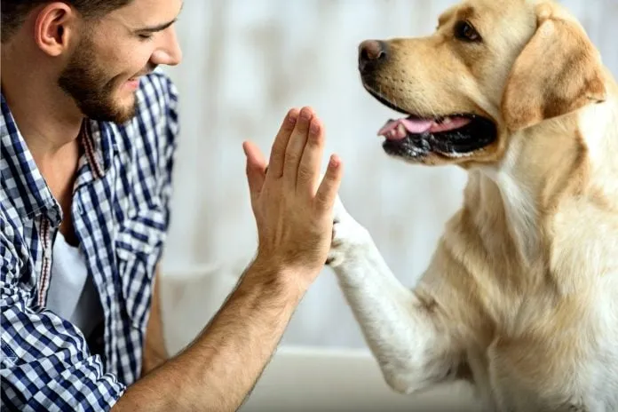
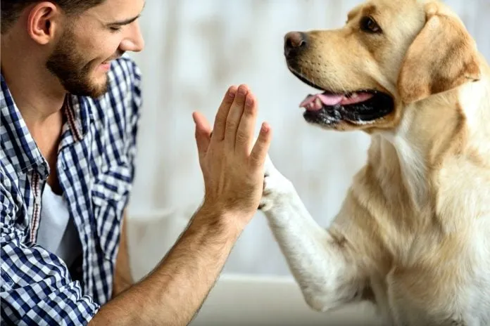
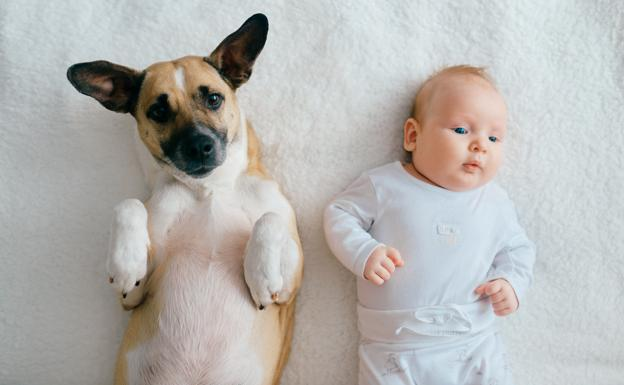
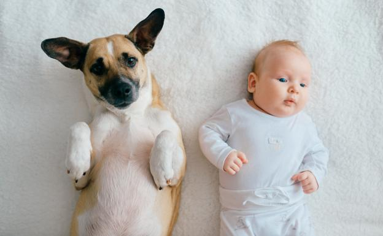

LOS MEJORS AMIGOS
LOS PERROS SON LA MEJOR COMPAÑIA
Los perros nos proporcionan una sensación de bienestar emocional a través del amor incondicional
que nos dan; por eso, son una gran compañía y consuelo para las personas que viven solas. Tener un perro puede
ayudar a las personas a recuperarse de un trauma personal, como la pérdida de un ser querido. Cuida a los animales y amalos
 

 
CUIDA, AMA Y CONSIENTE A TUS MASCOTAS

CUIDA, AMA Y CONSIENTE A TUS MASCOTAS
VALERY SOFIA MORA BALAGUERA-9B